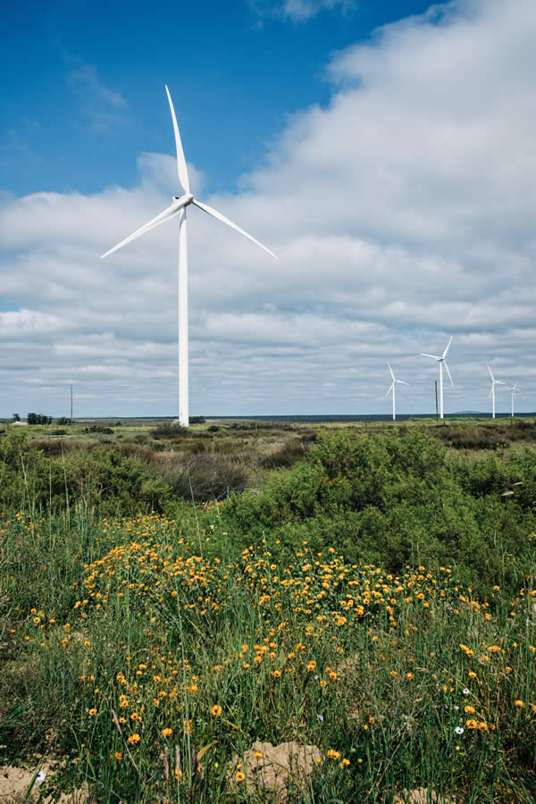

Education
Scholarships and bursaries, adult basic education and training, after-school programmes, support for teaching, curriculum and school governance, and infrastructure at schools.
The Hopefield Wind Farm Local Community Company turns clean, renewable energy into lasting benefit for communities within 50 km of the wind farm.
The Umoya Energy – Hopefield Wind Farm generates approximately 176 600 MWh of clean energy a year. We turn it into lasting benefit for the communities around it.
to long-term, sustainable projects
to smaller projects
Scholarships and bursaries, adult basic education and training, after-school programmes, support for teaching, curriculum and school governance, and infrastructure at schools.
Support for the elderly, people who have been abused and persons with disabilities; the empowerment of women; children with special needs; community infrastructure.
Healthcare programmes and initiatives that improve access to quality healthcare.
Training and support for emerging small businesses, self-help and skills projects, skills and leadership for young people, and local sport and cultural clubs.

Every application is assessed on its own merits. These are the steps, from first check to delivery in Hopefield.
Your project should be in education, social welfare, health or development, and serve the Saldanha Bay Local Municipality.
Download the Application for Funding. It includes the guidelines, the selection criteria and the form itself.
Describe the project in full: the need, who benefits, what you'll do, the budget and how you'll measure it.
Registration documents, a letter requesting funding and quotations. Photographs or press clippings help.
Post or deliver your application to 26 Voortrekker Road, Hopefield, 7355.
Four questions against our funding rules. You'll see whether to apply and exactly what to send.
Download the application form, with the guidelines and criteria, and tell us about your project.
Apply for funding